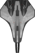
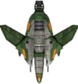
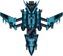
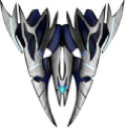
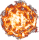

shoot 'em up game

In this game, you're the pilot of a fighter jet, racking up points and unlocking cool weapons by taking down enemies.
The longer you play, the tougher the foes get, and your scores shoot up
ENEMY

Regular enemies have low health in general, and defeating them earns you a small amount of points.

Tougher enemies are no joke – they've got loads of health, hit hard, and are a real challenge. But, if you manage to take them down, you'll score big points.

When facing a powerful boss, the whole vibe changes – even the background music kicks up a notch. This big shot launches fireballs,
and getting hit is no joke. But,
if you manage to take him down, you not only score a ton of points but, more importantly, you get to wield his fireball attack!

The ultimate enemy unleashes a barrage of powerful consecutive bullets, making it extremely challenging to evade. With thick health and formidable difficulty,
defeating this opponent not only scores you a significant number of points but also grants you the ability to use their rapid-fire bullet attack.
WEAPONS
The most basic weapon - rapid-fire bullets for easy use.

A powerful fireball, obtained after defeating a boss. It packs a punch, but it has a slow flight speed and requires some skill to hit targets accurately.
A mystical light sphere, acquired after defeating a boss. It features rapid-fire capabilities and moderate damage output,
making it easy to hit targets without the need for precise targeting skills.
The Vampiric Beam, the most mysterious weapon, can be obtained once you reach a certain score threshold. While its damage is low,
this weapon not only automatically targets enemies but also replenishes your health upon hitting them. It's the crucial weapon for prolonged battles!